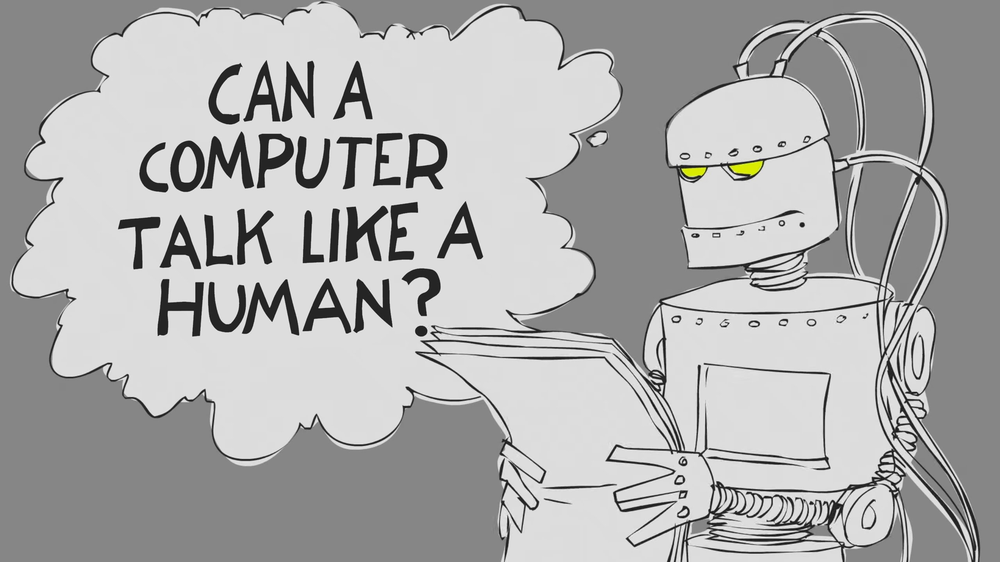

Το Τέστ του Τούρινγκ
Daily Fact
Today's Fact
Τεχνητή Νοημοσύνη
Η Τεχνητή Νοημοσύνη είναι ένας εξαιρετικά ενδιαφέρων κλάδος με ιστορία λίγων μόνο δεκαετιών. Ο θεμελιώδης στόχος αυτού του κλάδου δεν είναι η απλή μίμηση της νοημοσύνης ή η δημιουργία μιας έξυπνης απάτης. Τίποτε από όλα αυτά.Η Τεχνητή Νοημοσύνη επιδιώκει το αυθεντικό: μηχανές προικισμένες με νόηση. Αυτή η προσπάθεια βασίζεται σε μία τολμηρή θεωρητική αντίληψη η οποία πρεσβεύει ότι και οι άνθρωποι είναι, κατά βάθος, και οι ίδιοι υπολογιστές. Πρωτοπόρος σ' αυτόν τον τομέα θεωρείται ο Alan Turing με την κατασκευή μιας μηχανής με σκοπό να σπάει τα κωδικοποιημένα μηνύματα των Γερμανών. Το ερώτημα που αμέσως γεννήθηκε ήταν το εξής: Είναι δυνατό μια μηχανή να εξελιχθεί σε τέτοιο βαθμό ώστε να παρουσιάσει ανθρώπινη σκέψη; Κι αν ναι, πώς μπορούμε να ελέγξουμε αυτό τον ισχυρισμό, πως μπορούμε δηλαδή να διαπιστώσουμε τη νοημοσύνη της;
Το παιχνίδι της μίμησης
Ο Turing πρότεινε ένα απλό τεστ το οποίο βασίζεται σε ένα παιχνίδι που ονομάζεται «το παιχνίδι της μίμησης» και παίζεται από τρεις παίχτες, άγνωστους μεταξύ τους. Οι δύο είναι οι «μάρτυρες» και είναι αντίθετου φύλου. Ο τρίτος, ο «ανακριτής», προσπαθεί να προσδιορίσει την ταυτότητα του κάθε μάρτυρα με μόνη ένδειξη το πώς απαντούν στις ερωτήσεις. Ο ένας παίχτης, ας πούμε ο άντρας, προσπαθεί να ξεγελάσει τον ανακριτή ότι είναι γυναίκα ενώ ο άλλος παίχτης βοηθά τον ανακριτή να μαντέψει σωστά. Φυσικά η λύση θα ήταν εύκολη αν υπήρχαν εξωτερικές ενδείξεις όπως η εμφάνιση των παιχτών ή οι φωνές τους. Για να ξεπεραστούν αυτά τα εμπόδια η επικοινωνία γίνεται μέσω τηλετύπων ώστε να είναι φανερά μόνο τα λόγια των παιχτών.
Η Παρέμβαση του Τούρινγκ
Ο Turing εισήγαγε τον υπολογιστή στο παραπάνω παιχνίδι τοποθετώντας τον στη θέση του ενός παίχτη. Το παιχνίδι πλέον αναδιαμορφώθηκε καθώς ο ανακριτής έπρεπε όχι να διακρίνει το φύλο των παιχτών αλλά τον άνθρωπο από τη μηχανή. Αν ο ανακριτής μπέρδευε τη μηχανή με τον άνθρωπο τότε η μηχανή είχε περάσει το τεστ. Γιατί όμως το παραπάνω τεστ μπορεί να θεωρηθεί κριτήριο ανθρώπινης σκέψης εκ μέρος του υπολογιστή; Η απάντηση έγκειται στο διάλογο. Μια μηχανή, δηλαδή, που δε θα ακούγεται όπως ένας άνθρωπος αλλά θα μιλά ως τέτοιος, λέγοντας πράγματα που ένας μέσος άνθρωπος θα έλεγε κάτω από παρόμοιες συνθήκες. Μια μηχανή που θα μπορούσε, σε λεκτικό επίπεδο, να μετάσχει στις συζητήσεις των ανθρώπων σα να είναι «κανονικός άνθρωπος».
